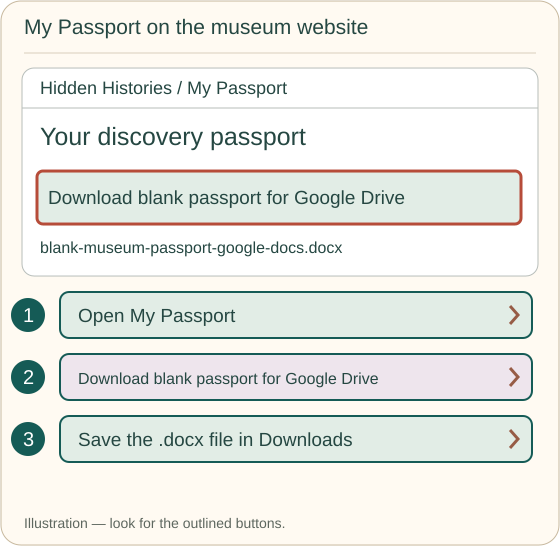
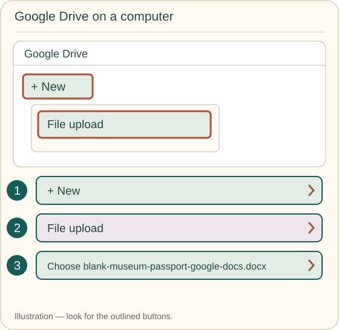
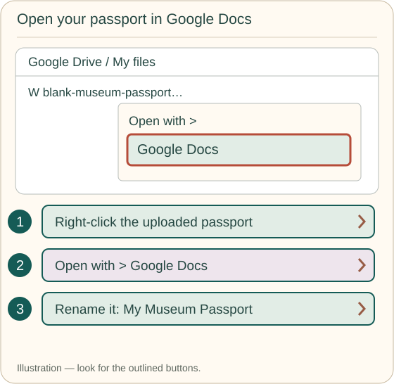
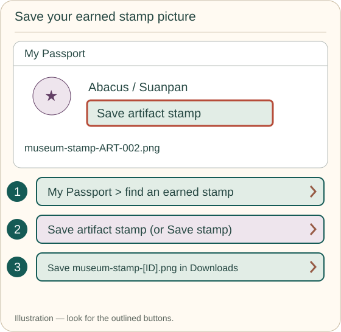
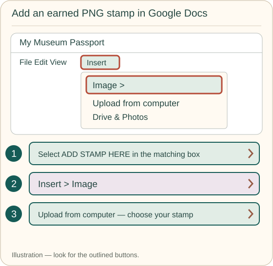
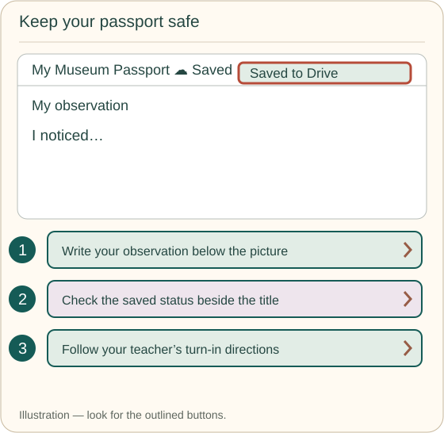
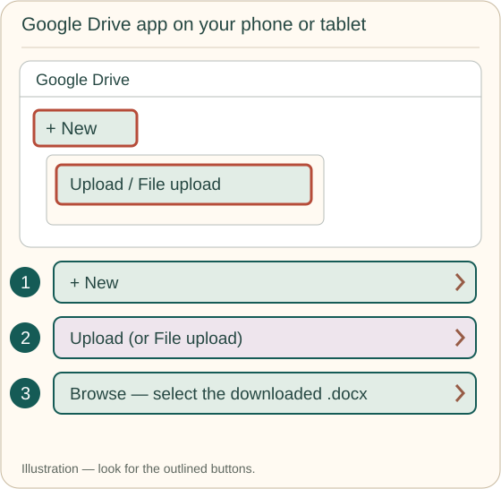
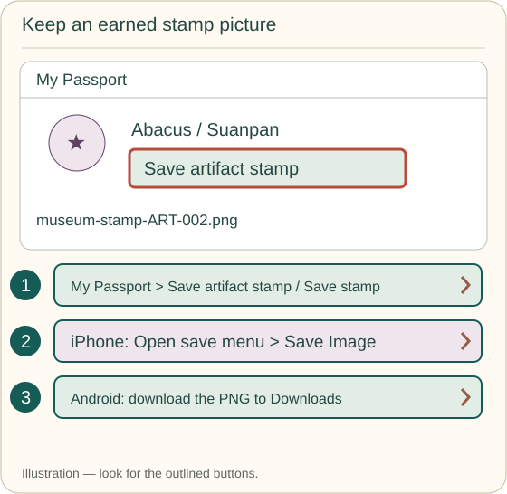
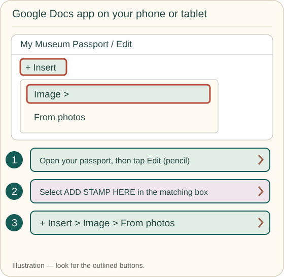

Your passport · picture directions
Keep your discoveries in Google Drive.
Start with a blank passport, earn stamp pictures, and add them in Google Docs. Use your school account. Your passport is your own copy.
These are labeled illustrations, not screenshots. Menus may look a little different on your device.
On a Chromebook or computer
Get your blank passport
Click Download blank passport for Google Drive above, or find the same button on My Passport. Save the file in Downloads. Its name ends in .docx.

Put it in your school Drive
Open Google Drive. Check that you’re using your school account. Click + New → File upload. Open Downloads and choose blank-museum-passport-google-docs.docx.

Open and name your copy
Right-click the uploaded passport. Choose Open with → Google Docs. Click the file’s title and rename it so you can find it again, for example My Museum Passport. You can edit the Word file in Docs, or choose File → Save as Google Docs if offered.

Earn and save a stamp picture
Back at the museum, answer an artifact’s quick question correctly. Open My Passport, find that artifact and click Save artifact stamp. For a special stamp you earned, click Save stamp. Save the .png picture in Downloads. The filename includes its exhibit or activity ID.

Add the picture to the right box
In Google Docs, find the matching artifact name and number. Select the words ADD STAMP HERE. Click Insert → Image → Upload from computer and choose the earned PNG. If you already uploaded the PNG to Drive, choose Drive or Drive & Photos instead.
Drag a corner to make the picture about 1¼ inches wide. Write your observation below it. Repeat as you earn more stamps.

Check your work is saved
Fill in your name, class, date and reflection in your passport. Google Docs saves online changes to your file. Check the saved status beside the title before you close it. Your teacher will tell you whether to share a link, attach it in Classroom, or download a PDF.

On an iPhone or iPad
Use Safari for the museum and the Google Drive and Google Docs apps for your passport. If the apps aren’t available on your school device, use a Chromebook or ask your teacher.
Save the blank passport
Tap Download blank passport for Google Drive above. If Safari asks, tap Download. Look in Files → Downloads under iCloud Drive or On My iPhone / iPad. Keep the .docx file.
Upload it and open Google Docs
In the Google Drive app, use your school account. Tap + New → Upload (sometimes File upload), then Browse. Choose the passport in Files. After it uploads, tap it and open it in Google Docs. Use the file menu to rename your copy.

Save your earned stamp to Photos
Earn a stamp at the museum, then open My Passport. Tap Save artifact stamp or Save stamp. In the museum save window, tap Open save menu → Save Image. Check the Photos app for your stamp. If only a download is offered, find the PNG in Files, open its Share menu and choose Save Image.

Add it in the Google Docs app
Open your passport in Google Docs. Tap the pencil to edit, if needed. Select ADD STAMP HERE in the matching box, then tap + → Image → From photos. Pick your earned stamp. Resize from a corner and type your observation below it.
Fill in your details and reflection. Tap the checkmark or Done to finish editing, check it has saved, and follow your teacher’s turn-in directions.

On an Android phone or tablet
Use Chrome for the museum and the Google Drive and Google Docs apps for your passport.
Download the blank passport
Tap Download blank passport for Google Drive above. Open Files or My Files → Downloads. Look for blank-museum-passport-google-docs.docx.
Put it in your school Drive
In the Google Drive app, check your school account. Tap + New → Upload (or File upload). Choose the downloaded passport. Open the uploaded file in Google Docs and rename your copy.
Download an earned stamp
Earn a stamp at the museum. In My Passport, tap Save artifact stamp or Save stamp, then Download to my phone if shown. Keep the .png picture in Downloads. Check Files or your photo gallery if you need to find it.
Add the picture in Google Docs
Open your passport in the Google Docs app and tap the pencil to edit. Select ADD STAMP HERE in the matching box. Tap + → Image → From photos. Choose your downloaded PNG; use the photo or file picker’s folders if needed.
Resize from a corner, add your observation, and fill in your details and reflection. Tap the checkmark or Done and check it has saved before leaving. Follow your teacher’s turn-in directions.
Keep your website progress too
Your Google Docs passport is a separate school document. Adding a stamp there does not add it to the museum website. To restore website progress on another device, use the museum’s Back up my progress and recovery options as well.
I downloaded the browser passport instead
The original Download blank passport template button saves an .html file. On a computer, open it in a browser. At the matching artifact, use Add earned stamp (image file). After editing, click Download completed passport, or Print / save as PDF. Keep that completed copy in Drive. Drive’s preview does not run the HTML passport’s editing buttons. For editing inside Google Docs, use the separate .docx download above.
Official help if my menu looks different
Put the museum on your Home Screen
Tap the museum shortcut button at the top of this page. You’ll see picture directions for your device. The menu in that window lets you choose a different device or browser.
School devices may have app installation turned off. You can still open the museum using its website link or QR cards.